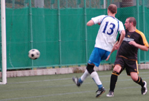
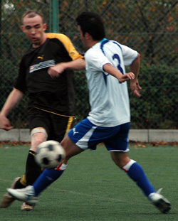
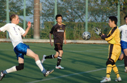

|
Hanno Misugidai, Sunday 20th October,
A beautiful sunny afternoon in the mountains of Hanno, the maple leaves a burnished orange with the first hint of autumn, yet it was a worried Cap’n Dez who looked to the horizon two minutes before kick-off, wondering if his team was ever going to arrive. Warm-up was perfunctory and a slightly under-prepared Jets side took the field against the unknown quantity of the Panthers.
The first ten minutes saw Ikko neat and tidy in combination with Yasu down the left. Gould was making a nuisance of himself up front. Chances were created and missed. The breakthrough came with Piper dropping back to tackle in the middle of the park and sending a quick ball through to Hiro, who showed a good turn of pace to get beyond the last defender and neatly slide in his second Div 3 goal in two games. Soon after, a break down the right allowed Keating to set up Piper at the far post and the ball was in the back of the net again. The Jets felt in control – deluded fools.

The Panthers were soon back in it with a breakaway goal. A mix up at the back left goalie Harada wrong-footed and the ball was duly tucked away. In reply Rob drove a low cross-shot across the face of the goal for an unfortunate Panthers defender to poke into his own net. Rob was a steady figure in the centre of the park and could easily have had a couple of goals, hitting the post twice in the first half. The Jets again relaxed and paid the price from an excellent shot by the Panthers central midfielder, going in at half time 3-2 up.
The second half was another story and although there were no more goals, there were plenty of incidents. The Jets flooded forward in search of another goal and rather lost their shape in the midfield leaving gaps, which the Panthers exploited. After his neat first half goal, Piper showed the kind of muppetry in front of goal that would make Jim Henson proud, putting his team under pressure by not killing off the game. (Several rusty old excuses were wheeled out for this profligacy).
Second-half keeper Gould saw a good deal of the action, picking up a back pass (which he hotly disputed) to give away a free kick inside the box. On the plus side, the sorcerous net-tender made a series of excellent saves as the Panthers hit on the counter, at one point employing the larger of his not inconsiderable testicles to usher out a cracking shot that rocketed back off the post. Even the Panthers had to admire his balls. Well, perhaps later. The Panthers will feel aggrieved not to have got the equalizer with a few good efforts including a decent attempted overhead. Plaudits (whatever they are) must go to Matt Setterfield who along with Gould saved the points with an excellent clearance off the line when a goal seemed certain.
The referee also deserves a mention for giving a yellow card to a Panthers player for not wearing shinpads (a player who is obviously either very brave or has never seen Rob’s tackling).
Although happy to get another three points, most of the Jets 2nds were pretty relieved to hold on for the win and will feel that they still need a bit more composure to do well in this division. Thanks to the Panthers for a good afternoon’s football and thanks to Kirin and Simon for arranging a good booze-up afterwards.
Report by Chris Piper
|